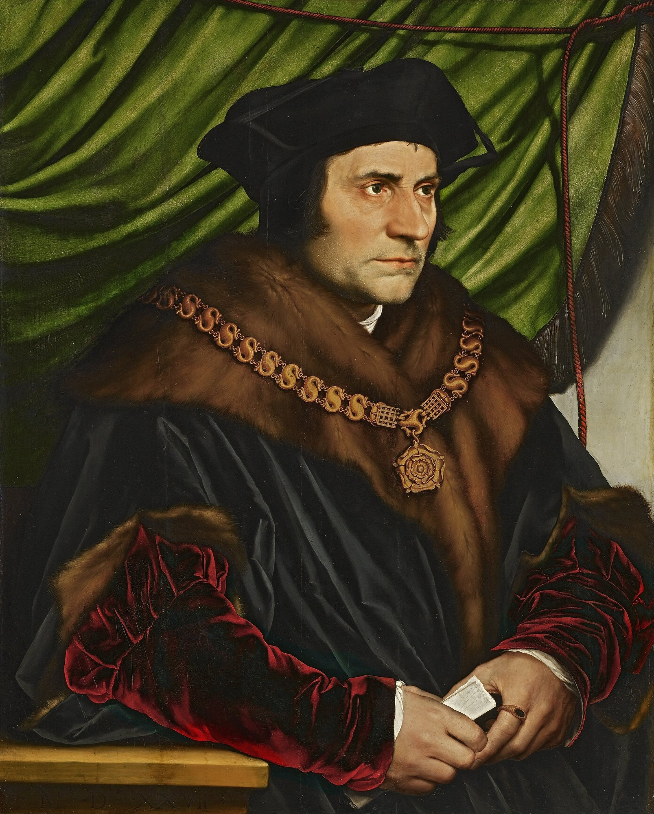
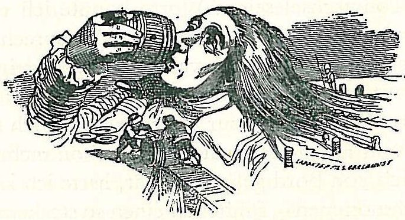
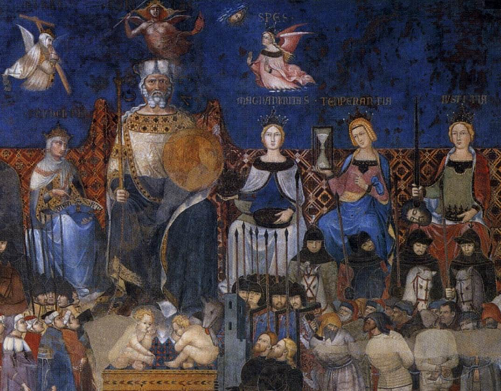

Séance 1 · Je remarque · 55 minutes, menées jusqu'à 52
L'origine de la dystopie
La dystopie a-t-elle une origine, ou est-elle devenue un genre, voire un sous-genre littéraire ?
Objet d'étude. Le roman et le récit du Moyen Âge au XXIe siècle. Parcours : fins du monde et recommencements. Ravage est proposé en lecture cursive, pour la seconde partie de l'oral ; Dune est une lecture complémentaire, en langue étrangère. L'élève présente une seule œuvre à l'oral, ici Ravage ; la comparaison avec Dune nourrit les raisons du choix et l'entretien.
Question directrice, qui organise la séquence. La dystopie a-t-elle une origine, ou est-elle devenue un genre, voire un sous-genre littéraire ?
Problématique comparative, qui relie les deux héros. Quand un monde perd ce dont il dépend, celui qui le sauve devient-il son maître ?
English strand. When a world loses what it lives on, does the one who saves it become its master?
Cette séquence ne recommence pas les deux études déjà menées. Elle les compare. On pourra y revenir depuis Who Speaks for the Desert ? (Frank Herbert, Dune, 1965) et depuis Quand la machine s'arrête (René Barjavel, Ravage, 1943).
| Minutes | Déroulement |
|---|---|
| 0 à 6 | Entrée dans la question directrice, à partir du portrait de More. |
| 6 à 18 | Repères : utopie, dystopie, anticipation. Frise datée. Exercice 1. |
| 18 à 32 | Swift et Grandville : la satire précède-t-elle le genre ? Exercice 2. |
| 32 à 44 | Lorenzetti, une ville bien gouvernée : l'utopie a-t-elle un envers ? Exercice 3. |
| 44 à 52 | Spirale, tour Je remarque. Point d'arrêt. |
Entrer dans la question

En 1516, Thomas More publie à Louvain, en latin, Utopia : le récit d'une île qui n'existe nulle part, et dont le nom dit précisément cela. La première traduction anglaise paraît en 1551. Plus de trois siècles plus tard, le 12 mars 1868, John Stuart Mill emploie à la Chambre des communes le mot anglais « dystopia ». Entre les deux, Swift publie Gulliver's Travels, en 1726. La question de cette séance, et de toute la séquence, est celle-ci : la dystopie a-t-elle une origine, dans cette lignée, ou est-elle devenue, au XXe siècle, un genre, voire un sous-genre littéraire ?
Repères, à installer
On distingue trois mots, que l'on ne confond pas :
- Utopie : un lieu, ou un régime, présenté comme meilleur, souvent à l'écart du monde connu. Le mot naît avec More, 1516.
- Dystopie : un monde présenté comme pire, ou comme un bonheur qui se paie d'une servitude. Le mot anglais est attesté chez Mill en 1868 ; Bentham avait employé « cacotopia » en 1818. On discute encore si la dystopie est le jumeau sombre de l'utopie, ou un genre constitué au XXe siècle, avec Zamiatine, Huxley et Orwell, parfois rangé comme sous-genre de la science-fiction, ou de la littérature utopique.
- Anticipation : un récit situé dans un avenir imaginable, sans que cet avenir soit nécessairement un enfer ou un paradis. Ravage s'annonce souvent ainsi. Dune se situe dans un futur très lointain, mais ce n'est pas un calendrier d'anticipation au sens de 2052.
Exercice 1. Dater et définir
Remplissez le tableau. Pour chaque date, donnez l'œuvre ou l'occurrence, et dites s'il s'agit d'une utopie, d'une satire, d'une attestation du mot, ou d'un récit d'anticipation.
| Date | Œuvre ou occurrence | Comment la classer ? |
|---|---|---|
| 1516 | ||
| 1551 | ||
| 1726 | ||
| 1818 | ||
| 12 mars 1868 | ||
| 1943 | ||
| 1965 |
Corrigé de l'exercice 1
- 1516 : Thomas More, Utopia, en latin. Utopie fondatrice.
- 1551 : première traduction anglaise de Utopia.
- 1726 : Swift, Gulliver's Travels. Satire, voyages imaginaires, qui prépare des procédés que la dystopie reprendra.
- 1818 : Jeremy Bentham, le mot « cacotopia ».
- 12 mars 1868 : John Stuart Mill, le mot « dystopia », à la Chambre des communes.
- 1943 : Barjavel, Ravage. Roman d'anticipation ; on discutera plus tard s'il est, aussi, une dystopie.
- 1965 : Herbert, Dune. Roman de science-fiction ; on discutera s'il est, ou non, une dystopie.
Swift, et ce qui précède le genre

Swift n'écrit pas une dystopie au sens du XXe siècle. Il écrit une satire, par le voyage et par le changement d'échelle. Pourtant, déjà, un monde inventé sert à juger le monde réel. C'est une origine possible, parmi d'autres, et non une preuve que le genre était déjà là.
Exercice 2. Huit lignes
En huit lignes, répondez : si la dystopie a une origine dans l'utopie et dans la satire, cela suffit-il à en faire un genre, dès le XVIe ou le XVIIIe siècle ? Appuyez-vous sur une différence précise entre Utopia et ce que vous savez déjà de Ravage ou de Dune.
Éléments de corrigé de l'exercice 2
On attend une distinction. Une origine n'est pas encore un genre. More invente un lieu pour penser la cité ; Swift invente des voyages pour satiriser l'Angleterre. Un genre, ou un sous-genre, se reconnaît à des conventions partagées, à un public, à une série d'œuvres qui se répondent. Cela se constitue surtout au XXe siècle. Ravage et Dune héritent de cette histoire, sans s'y réduire : l'un raconte 2052 puis un ordre rural ; l'autre, un empire et un désert. Ni l'un ni l'autre n'est simplement « une nouvelle Utopie à l'envers ».
Une ville bien gouvernée, et son envers

Avant More déjà, on représente le bon gouvernement, et l'on sait peindre aussi le mauvais. L'utopie littéraire n'invente pas seule l'envers de la cité juste. Cela aide à poser la question, sans la refermer : la dystopie serait-elle aussi ancienne que le désir d'une cité meilleure, ou faut-il attendre un genre, des titres, un lexique ?
Exercice 3. Pour la spirale
Tour Je remarque. Sur le côté extérieur : une idée (l'origine, ou le genre). Sur le côté intérieur : une référence précise de Ravage et une de Dune, déjà lues, qui font écho à cette idée.
Pli du professeur
Ne pas donner la pointe à l'avance. Vérifier les dates au tableau, surtout 1868 (Mill) et 1818 (Bentham), souvent confondues. Rappeler que « session 2028 » est une formulation officielle du bac, et que cette séquence s'adresse à la Première du lycée général et technologique. Les citations de Barjavel et d'Herbert se vérifient dans l'édition de la classe.
Les citations et les paginations sont à vérifier dans l'édition de la classe. Les traductions françaises de Dune proposées ici sont des traductions de travail, pour la classe ; elles ne reprennent pas la traduction publiée, qui reste protégée. Les extraits sont courts, dans la limite du droit de citation.
Point d'arrêt, à 52 minutes. On laisse au tableau les trois définitions et la question directrice. La frise peut être collée dans le cahier.
Issue de secours, huit minutes. Si le temps manque, on retient une seule question écrite au tableau, on ferme la spirale sur un mot, et l'on reporte le reste au travail à la maison.
Travail à la maison. Relire, dans chaque roman déjà étudié, les toutes premières pages. Noter une marque du monde décrit (un objet, une loi, une ressource) et l'apporter à la séance 2.